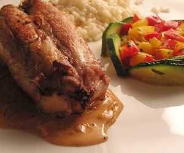

Kaninchenfilet
5 von 6das fleisch mit kernöl gut einpinseln. ca. 5 minuten gut anbraten. in den vorgeheizten ofen bei 70 grad 45 minuten nach garen. in derselben pfanne eine charlotte andämpfen und mit cognac ablöschen. etwas rahm und tomatenmark beigeben. mit salz und pfeffer abschmecken.
